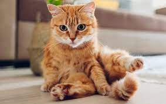
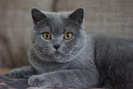

O gato ou gato doméstico é um mamífero carnívoro da família dos felídeos, muito popular como animal de estimação. Ocupando o topo da cadeia alimentar, é predador natural de diversos animais, como roedores, pássaros, lagartixas e alguns insetos.
Expectativa de Vida: 12 – 18 anos (Domesticado)
Origem: Wikipédia, a enciclopédia livre.
 O cérebro de um gato é mais parecido com o de um humano do que com o de um cachorro Tanto gatos quanto seres humanos possuem uma região do cérebro idêntica, que é responsável pelas emoções. Além disso, seu genoma é 73% similar ao genoma humano e 80% similar ao genoma dos cachorros!
1- Em média um gato passa 2/3 do dia a dormir. Isso significa que em 9 anos de vida, apenas está acordado 3 anos
2-Os gatos não saboreiam o doce.
3- Quando um gato persegue uma presa, ao contrário de um cão ou humano, mantém a cabeça sempre para baixo.
4- As bolas de pelo que vomitamos chamam-se egagropilos.
5- As gatas tendem a ser dextras, enquanto os gatos tendem a ser maioritariamente esquerdinos.
6- Um gato faz cerca de 100 sons diferentes, enquanto um cão faz cerca de 10.
7-O cérebro de um gato é biologicamente mais similar ao de um humano do que o cérebro de um cão. Ambos, humanos e gatos, têm uma região idêntica no cérebro responsável pelas emoções.
8- Existem mais de 500 milhões de gatos domésticos no mundo, e aproximadamente 40 raças reconhecidas.
9- O gato doméstico mais antigo foi encontrado numa sepultura no Chipre com mais de 9000 anos.
10- De acordo com uma lenda hebraica, Noé rezou a Deus para o ajudar a proteger a comida dos ratos na arca. Deus fez um Leão espirrar, e desse espirro nasceu o gato.
11- A audição de um gato é melhor do que a de um cão. Um gato consegue ouvir sons de alta frequência, cerca de 2 oitavas acima de qualquer humano.
12- Um gato consegue correr a 49 km por hora, em curtas distâncias.
13- Um gato salta 5 vezes a sua altura num único salto.
14- Alguns gatos já sobreviveram a quedas de 20 metros, devido ao reflexo de endireitamento. Os seus olhos, os órgãos e ouvido interno, dizem ao gato onde é que ele está no espaço, para que ele consiga aterrar em pé. Mesmo os gatos sem cauda possuem esta capacidade